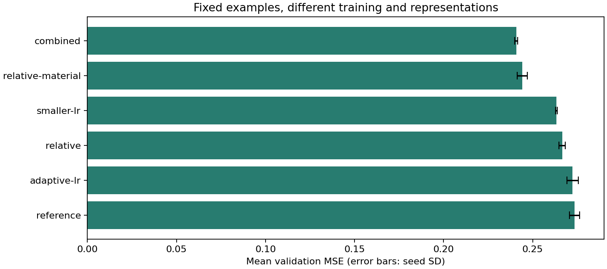
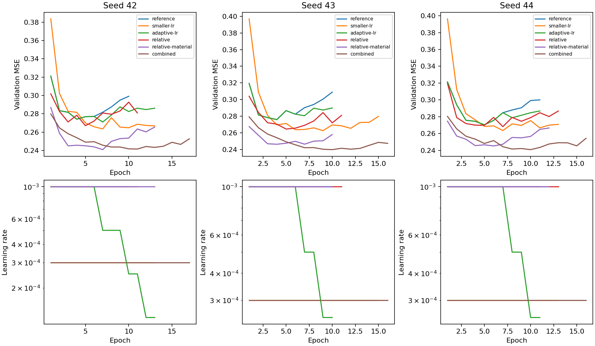

CHESSENGINE · DEVELOPMENT STUDY
Improving the evaluator without adding examples
Reference mean MSE: 0.27350. Lowest mean MSE: 0.24076 (combined; reduction 12.0%). Completed 18 runs. Released models and deployment are unchanged.
Method and mathematical interpretation
All 180,302 training positions, their labels and 9,789 validation positions are fixed. Every run minimizes mean((prediction − target)²) with a 128/64 ReLU MLP and tanh output. Learning-rate treatments change the size of updates. Relative inputs orient pieces to the player to move; material summaries make counts, balance and game phase explicit. Targets keep their original sign. No augmentation or new labels.
The 12 material inputs are linear summaries of the existing piece indicators: if m = Ax, the first layer Wₓx + Wₘm equals (Wₓ + WₘA)x. They add no information and do not enlarge the unconstrained function class relative to v2. They change the parameterization, initialization and effect of weight decay, which can make useful relationships easier to learn.
Three reference runs must reproduce historical weights and validation MSE within 10⁻⁶ before treatments proceed. The canonical-position audit rejects cross-split overlaps. A promising treatment must reduce mean MSE by at least 2% and improve at least two seeds. Only the best qualifying optimization and representation treatments may be combined.

| Treatment | Mean MSE | Seed SD | Reduction | Improved seeds | Promising | Inference µs |
|---|
| combined | 0.24076 | 0.00084 | 12.0% | 3 | True | 64.3 |
| relative-material | 0.24417 | 0.00287 | 10.7% | 3 | True | 64.0 |
| smaller-lr | 0.26326 | 0.00047 | 3.7% | 3 | True | 42.8 |
| relative | 0.26662 | 0.00181 | 2.5% | 3 | True | 54.0 |
| adaptive-lr | 0.27247 | 0.00309 | 0.4% | 1 | False | 43.9 |
| reference | 0.27350 | 0.00287 | 0.0% | 0 | False | 43.3 |
Conditional combination: smaller-lr + relative-material qualified independently and were combined for three additional runs.
Findings and recommended follow-up
Prioritize combined for a separately frozen confirmatory evaluation: it improves 3 seeds and meets the development criterion. Keep all three seed checkpoints for that evaluation; do not pick a lucky seed or replace the demo yet.
Configurations not meeting the criterion: adaptive-lr.
The following exploratory subgroup comparison averages the three seeds; it is not a separate hypothesis test. Near-equal overall performance can hide subgroup regressions.
| Dimension | Group | Reference MSE | Best treatment MSE | Difference |
|---|
| side | black | 0.28664 | 0.24854 | -0.03809 |
| side | white | 0.25977 | 0.23263 | -0.02714 |
| move_count_phase | endgame | 0.24365 | 0.20801 | -0.03564 |
| move_count_phase | middlegame | 0.33310 | 0.28648 | -0.04662 |
| move_count_phase | opening | 0.23074 | 0.21153 | -0.01920 |
| target_magnitude | [.25,.5) | 0.14706 | 0.13982 | -0.00725 |
| target_magnitude | [.5,.75) | 0.25830 | 0.23603 | -0.02228 |
| target_magnitude | [.75,1] | 0.33005 | 0.28301 | -0.04704 |
| target_magnitude | [0,.25) | 0.15188 | 0.14984 | -0.00204 |
| nonpawn_material | 0-8 | 0.23148 | 0.19050 | -0.04097 |
| nonpawn_material | 17+ | 0.28057 | 0.25381 | -0.02676 |
| nonpawn_material | 9-16 | 0.28859 | 0.24659 | -0.04200 |
| material_imbalance | 1-3 | 0.43188 | 0.35376 | -0.07811 |
| material_imbalance | <=1 | 0.27980 | 0.25216 | -0.02765 |
| material_imbalance | >3 | 0.17254 | 0.15705 | -0.01549 |
Every seed and paired uncertainty
| Treatment | Seed | Frozen train MSE | Validation MSE | 95% CI: treatment − reference MSE | Best/total epochs | Updates | Epoch work (s) | Fit + diagnostics (s) |
|---|
| reference | 42 | 0.18945 | 0.27411 | reference | 4/10 | 7050 | 5.93 | 8.40 |
| reference | 43 | 0.18527 | 0.27601 | reference | 4/10 | 7050 | 6.48 | 7.67 |
| reference | 44 | 0.16840 | 0.27037 | reference | 5/11 | 7755 | 8.11 | 9.42 |
| smaller-lr | 42 | 0.20159 | 0.26351 | [-0.01792, -0.00404] | 7/13 | 9165 | 9.06 | 10.54 |
| smaller-lr | 43 | 0.17250 | 0.26272 | [-0.02059, -0.00598] | 9/15 | 10575 | 9.64 | 11.21 |
| smaller-lr | 44 | 0.20072 | 0.26355 | [-0.01378, 0.00035] | 7/13 | 9165 | 7.70 | 9.08 |
| adaptive-lr | 42 | 0.13127 | 0.27103 | [-0.00953, 0.00346] | 7/13 | 9165 | 11.20 | 12.96 |
| adaptive-lr | 43 | 0.18527 | 0.27601 | [0.00000, 0.00000] | 4/10 | 7050 | 6.63 | 7.87 |
| adaptive-lr | 44 | 0.16840 | 0.27037 | [0.00000, 0.00000] | 5/11 | 7755 | 8.28 | 9.58 |
| relative | 42 | 0.16863 | 0.26707 | [-0.01506, 0.00077] | 5/11 | 7755 | 6.01 | 7.21 |
| relative | 43 | 0.17584 | 0.26463 | [-0.01934, -0.00365] | 5/11 | 7755 | 5.89 | 7.07 |
| relative | 44 | 0.14931 | 0.26816 | [-0.01095, 0.00732] | 7/13 | 9165 | 8.75 | 10.29 |
| relative-material | 42 | 0.14811 | 0.24093 | [-0.04115, -0.02502] | 7/13 | 9165 | 7.39 | 8.75 |
| relative-material | 43 | 0.18803 | 0.24639 | [-0.03752, -0.02183] | 4/10 | 7050 | 6.35 | 7.47 |
| relative-material | 44 | 0.16314 | 0.24520 | [-0.03352, -0.01665] | 6/12 | 8460 | 7.47 | 8.78 |
| combined | 42 | 0.17204 | 0.24158 | [-0.04027, -0.02481] | 11/17 | 11985 | 9.58 | 11.28 |
| combined | 43 | 0.17472 | 0.23991 | [-0.04350, -0.02868] | 10/16 | 11280 | 8.73 | 10.36 |
| combined | 44 | 0.17556 | 0.24079 | [-0.03745, -0.02071] | 10/16 | 11280 | 9.21 | 10.83 |
Intervals use 2,000 paired source-game resamples per seed, conditional on the selected models. They are separate from seed standard deviation and do not correct for repeated validation selection or multiple comparisons.

Subgroup errors
Groups below 100 positions are sparse. These are exploratory, overlapping groups.
side
| Treatment | Seed | Group | Positions/games | MSE | MAE | Signed error |
|---|
| reference | 42 | black | 5001/2063 | 0.28805 | 0.36160 | -0.03569 |
| reference | 42 | white | 4788/2056 | 0.25956 | 0.34939 | 0.01574 |
| reference | 43 | black | 5001/2063 | 0.28385 | 0.36499 | -0.03924 |
| reference | 43 | white | 4788/2056 | 0.26783 | 0.34303 | -0.02769 |
| reference | 44 | black | 5001/2063 | 0.28802 | 0.35482 | -0.02479 |
| reference | 44 | white | 4788/2056 | 0.25193 | 0.33164 | -0.00092 |
| smaller-lr | 42 | black | 5001/2063 | 0.27165 | 0.35781 | -0.02867 |
| smaller-lr | 42 | white | 4788/2056 | 0.25501 | 0.34204 | -0.01106 |
| smaller-lr | 43 | black | 5001/2063 | 0.27334 | 0.35595 | 0.00532 |
| smaller-lr | 43 | white | 4788/2056 | 0.25163 | 0.33512 | 0.02112 |
| smaller-lr | 44 | black | 5001/2063 | 0.27384 | 0.35728 | -0.01810 |
| smaller-lr | 44 | white | 4788/2056 | 0.25279 | 0.34124 | -0.03569 |
| adaptive-lr | 42 | black | 5001/2063 | 0.28393 | 0.34668 | -0.02152 |
| adaptive-lr | 42 | white | 4788/2056 | 0.25755 | 0.32320 | -0.00464 |
| adaptive-lr | 43 | black | 5001/2063 | 0.28385 | 0.36499 | -0.03924 |
| adaptive-lr | 43 | white | 4788/2056 | 0.26783 | 0.34303 | -0.02769 |
| adaptive-lr | 44 | black | 5001/2063 | 0.28802 | 0.35482 | -0.02479 |
| adaptive-lr | 44 | white | 4788/2056 | 0.25193 | 0.33164 | -0.00092 |
| relative | 42 | black | 5001/2063 | 0.27951 | 0.35085 | 0.00607 |
| relative | 42 | white | 4788/2056 | 0.25407 | 0.33310 | 0.02948 |
| relative | 43 | black | 5001/2063 | 0.27042 | 0.34642 | -0.02788 |
| relative | 43 | white | 4788/2056 | 0.25859 | 0.33735 | -0.00091 |
| relative | 44 | black | 5001/2063 | 0.27386 | 0.33969 | 0.00522 |
| relative | 44 | white | 4788/2056 | 0.26220 | 0.32680 | 0.01909 |
| relative-material | 42 | black | 5001/2063 | 0.24734 | 0.32323 | 0.01746 |
| relative-material | 42 | white | 4788/2056 | 0.23424 | 0.30898 | 0.03635 |
| relative-material | 43 | black | 5001/2063 | 0.25730 | 0.33670 | -0.01973 |
| relative-material | 43 | white | 4788/2056 | 0.23500 | 0.32199 | -0.00655 |
| relative-material | 44 | black | 5001/2063 | 0.25149 | 0.32691 | 0.02283 |
| relative-material | 44 | white | 4788/2056 | 0.23862 | 0.31726 | 0.03904 |
| combined | 42 | black | 5001/2063 | 0.24810 | 0.32709 | 0.01521 |
| combined | 42 | white | 4788/2056 | 0.23478 | 0.31432 | 0.03048 |
| combined | 43 | black | 5001/2063 | 0.24939 | 0.32808 | -0.01932 |
| combined | 43 | white | 4788/2056 | 0.23000 | 0.31095 | 0.00166 |
| combined | 44 | black | 5001/2063 | 0.24814 | 0.32453 | -0.01815 |
| combined | 44 | white | 4788/2056 | 0.23311 | 0.31240 | -0.00412 |
move count phase
| Treatment | Seed | Group | Positions/games | MSE | MAE | Signed error |
|---|
| reference | 42 | endgame | 1571/819 | 0.24291 | 0.26667 | -0.00608 |
| reference | 42 | middlegame | 3891/1970 | 0.32988 | 0.38193 | -0.02161 |
| reference | 42 | opening | 4327/2193 | 0.23530 | 0.36428 | -0.00219 |
| reference | 43 | endgame | 1571/819 | 0.23656 | 0.26292 | -0.02346 |
| reference | 43 | middlegame | 3891/1970 | 0.34184 | 0.38813 | -0.03481 |
| reference | 43 | opening | 4327/2193 | 0.23114 | 0.35694 | -0.03617 |
| reference | 44 | endgame | 1571/819 | 0.25147 | 0.25909 | -0.00379 |
| reference | 44 | middlegame | 3891/1970 | 0.32758 | 0.37113 | -0.00716 |
| reference | 44 | opening | 4327/2193 | 0.22578 | 0.34926 | -0.02185 |
| smaller-lr | 42 | endgame | 1571/819 | 0.22755 | 0.26995 | -0.00309 |
| smaller-lr | 42 | middlegame | 3891/1970 | 0.31756 | 0.37852 | -0.01970 |
| smaller-lr | 42 | opening | 4327/2193 | 0.22797 | 0.35363 | -0.02654 |
| smaller-lr | 43 | endgame | 1571/819 | 0.22672 | 0.25865 | 0.00691 |
| smaller-lr | 43 | middlegame | 3891/1970 | 0.31846 | 0.37087 | 0.00507 |
| smaller-lr | 43 | opening | 4327/2193 | 0.22567 | 0.35481 | 0.02245 |
| smaller-lr | 44 | endgame | 1571/819 | 0.22719 | 0.26886 | -0.01507 |
| smaller-lr | 44 | middlegame | 3891/1970 | 0.31106 | 0.37083 | -0.02511 |
| smaller-lr | 44 | opening | 4327/2193 | 0.23402 | 0.35945 | -0.03237 |
| adaptive-lr | 42 | endgame | 1571/819 | 0.25092 | 0.25004 | -0.01357 |
| adaptive-lr | 42 | middlegame | 3891/1970 | 0.33366 | 0.36175 | -0.02171 |
| adaptive-lr | 42 | opening | 4327/2193 | 0.22201 | 0.34224 | -0.00556 |
| adaptive-lr | 43 | endgame | 1571/819 | 0.23656 | 0.26292 | -0.02346 |
| adaptive-lr | 43 | middlegame | 3891/1970 | 0.34184 | 0.38813 | -0.03481 |
| adaptive-lr | 43 | opening | 4327/2193 | 0.23114 | 0.35694 | -0.03617 |
| adaptive-lr | 44 | endgame | 1571/819 | 0.25147 | 0.25909 | -0.00379 |
| adaptive-lr | 44 | middlegame | 3891/1970 | 0.32758 | 0.37113 | -0.00716 |
| adaptive-lr | 44 | opening | 4327/2193 | 0.22578 | 0.34926 | -0.02185 |
| relative | 42 | endgame | 1571/819 | 0.23869 | 0.25672 | 0.00329 |
| relative | 42 | middlegame | 3891/1970 | 0.32082 | 0.36441 | 0.00393 |
| relative | 42 | opening | 4327/2193 | 0.22903 | 0.35319 | 0.03491 |
| relative | 43 | endgame | 1571/819 | 0.23305 | 0.25277 | 0.00242 |
| relative | 43 | middlegame | 3891/1970 | 0.32316 | 0.36716 | -0.03117 |
| relative | 43 | opening | 4327/2193 | 0.22347 | 0.35173 | -0.00607 |
| relative | 44 | endgame | 1571/819 | 0.24946 | 0.25193 | 0.00921 |
| relative | 44 | middlegame | 3891/1970 | 0.33296 | 0.35995 | 0.00804 |
| relative | 44 | opening | 4327/2193 | 0.21667 | 0.33908 | 0.01658 |
| relative-material | 42 | endgame | 1571/819 | 0.21469 | 0.23616 | 0.03312 |
| relative-material | 42 | middlegame | 3891/1970 | 0.29486 | 0.33706 | 0.02541 |
| relative-material | 42 | opening | 4327/2193 | 0.20197 | 0.32664 | 0.02554 |
| relative-material | 43 | endgame | 1571/819 | 0.21261 | 0.23814 | -0.00525 |
| relative-material | 43 | middlegame | 3891/1970 | 0.28579 | 0.34291 | -0.02821 |
| relative-material | 43 | opening | 4327/2193 | 0.22322 | 0.35063 | -0.00277 |
| relative-material | 44 | endgame | 1571/819 | 0.21073 | 0.23115 | 0.03400 |
| relative-material | 44 | middlegame | 3891/1970 | 0.29425 | 0.34063 | 0.02964 |
| relative-material | 44 | opening | 4327/2193 | 0.21360 | 0.33866 | 0.03059 |
| combined | 42 | endgame | 1571/819 | 0.20758 | 0.23600 | 0.01611 |
| combined | 42 | middlegame | 3891/1970 | 0.28827 | 0.33843 | 0.01672 |
| combined | 42 | opening | 4327/2193 | 0.21194 | 0.33583 | 0.03041 |
| combined | 43 | endgame | 1571/819 | 0.20836 | 0.23646 | 0.01000 |
| combined | 43 | middlegame | 3891/1970 | 0.28413 | 0.33319 | -0.00268 |
| combined | 43 | opening | 4327/2193 | 0.21160 | 0.33780 | -0.02171 |
| combined | 44 | endgame | 1571/819 | 0.20809 | 0.23268 | 0.00907 |
| combined | 44 | middlegame | 3891/1970 | 0.28705 | 0.33412 | -0.02613 |
| combined | 44 | opening | 4327/2193 | 0.21106 | 0.33583 | -0.00533 |
target magnitude
| Treatment | Seed | Group | Positions/games | MSE | MAE | Signed error |
|---|
| reference | 42 | [.25,.5) | 392/360 | 0.13977 | 0.28837 | 0.02847 |
| reference | 42 | [.5,.75) | 411/379 | 0.25092 | 0.38112 | 0.02639 |
| reference | 42 | [.75,1] | 6447/2072 | 0.33273 | 0.37586 | -0.03360 |
| reference | 42 | [0,.25) | 2539/1371 | 0.14977 | 0.31051 | 0.03604 |
| reference | 43 | [.25,.5) | 392/360 | 0.14943 | 0.29388 | -0.00050 |
| reference | 43 | [.5,.75) | 411/379 | 0.25481 | 0.38283 | -0.01336 |
| reference | 43 | [.75,1] | 6447/2072 | 0.33434 | 0.37498 | -0.05302 |
| reference | 43 | [0,.25) | 2539/1371 | 0.15088 | 0.30631 | 0.00736 |
| reference | 44 | [.25,.5) | 392/360 | 0.15199 | 0.29071 | 0.02311 |
| reference | 44 | [.5,.75) | 411/379 | 0.26917 | 0.38964 | 0.02511 |
| reference | 44 | [.75,1] | 6447/2072 | 0.32308 | 0.35665 | -0.03401 |
| reference | 44 | [0,.25) | 2539/1371 | 0.15499 | 0.31073 | 0.02815 |
| smaller-lr | 42 | [.25,.5) | 392/360 | 0.12256 | 0.25988 | 0.03145 |
| smaller-lr | 42 | [.5,.75) | 411/379 | 0.25781 | 0.38226 | -0.01230 |
| smaller-lr | 42 | [.75,1] | 6447/2072 | 0.32125 | 0.37296 | -0.04024 |
| smaller-lr | 42 | [0,.25) | 2539/1371 | 0.13959 | 0.30077 | 0.02198 |
| smaller-lr | 43 | [.25,.5) | 392/360 | 0.13597 | 0.28441 | 0.05290 |
| smaller-lr | 43 | [.5,.75) | 411/379 | 0.26472 | 0.38932 | 0.04960 |
| smaller-lr | 43 | [.75,1] | 6447/2072 | 0.31558 | 0.36121 | -0.01330 |
| smaller-lr | 43 | [0,.25) | 2539/1371 | 0.14774 | 0.30895 | 0.06787 |
| smaller-lr | 44 | [.25,.5) | 392/360 | 0.13243 | 0.27473 | 0.00834 |
| smaller-lr | 44 | [.5,.75) | 411/379 | 0.26587 | 0.39022 | -0.01347 |
| smaller-lr | 44 | [.75,1] | 6447/2072 | 0.32010 | 0.37056 | -0.04673 |
| smaller-lr | 44 | [0,.25) | 2539/1371 | 0.13981 | 0.30071 | 0.01657 |
| adaptive-lr | 42 | [.25,.5) | 392/360 | 0.15619 | 0.30239 | 0.03762 |
| adaptive-lr | 42 | [.5,.75) | 411/379 | 0.26123 | 0.37385 | 0.01239 |
| adaptive-lr | 42 | [.75,1] | 6447/2072 | 0.31742 | 0.33671 | -0.03175 |
| adaptive-lr | 42 | [0,.25) | 2539/1371 | 0.17256 | 0.33017 | 0.02167 |
| adaptive-lr | 43 | [.25,.5) | 392/360 | 0.14943 | 0.29388 | -0.00050 |
| adaptive-lr | 43 | [.5,.75) | 411/379 | 0.25481 | 0.38283 | -0.01336 |
| adaptive-lr | 43 | [.75,1] | 6447/2072 | 0.33434 | 0.37498 | -0.05302 |
| adaptive-lr | 43 | [0,.25) | 2539/1371 | 0.15088 | 0.30631 | 0.00736 |
| adaptive-lr | 44 | [.25,.5) | 392/360 | 0.15199 | 0.29071 | 0.02311 |
| adaptive-lr | 44 | [.5,.75) | 411/379 | 0.26917 | 0.38964 | 0.02511 |
| adaptive-lr | 44 | [.75,1] | 6447/2072 | 0.32308 | 0.35665 | -0.03401 |
| adaptive-lr | 44 | [0,.25) | 2539/1371 | 0.15499 | 0.31073 | 0.02815 |
| relative | 42 | [.25,.5) | 392/360 | 0.14537 | 0.29143 | 0.07433 |
| relative | 42 | [.5,.75) | 411/379 | 0.26444 | 0.39552 | 0.05523 |
| relative | 42 | [.75,1] | 6447/2072 | 0.31963 | 0.35504 | -0.01030 |
| relative | 42 | [0,.25) | 2539/1371 | 0.15281 | 0.30869 | 0.07329 |
| relative | 43 | [.25,.5) | 392/360 | 0.16281 | 0.30316 | 0.03237 |
| relative | 43 | [.5,.75) | 411/379 | 0.23102 | 0.36333 | -0.00077 |
| relative | 43 | [.75,1] | 6447/2072 | 0.31504 | 0.35297 | -0.03560 |
| relative | 43 | [0,.25) | 2539/1371 | 0.15780 | 0.31661 | 0.02889 |
| relative | 44 | [.25,.5) | 392/360 | 0.16797 | 0.30717 | 0.05775 |
| relative | 44 | [.5,.75) | 411/379 | 0.26561 | 0.38169 | 0.03899 |
| relative | 44 | [.75,1] | 6447/2072 | 0.31453 | 0.33678 | -0.00677 |
| relative | 44 | [0,.25) | 2539/1371 | 0.16630 | 0.32101 | 0.04826 |
| relative-material | 42 | [.25,.5) | 392/360 | 0.14830 | 0.29470 | 0.05025 |
| relative-material | 42 | [.5,.75) | 411/379 | 0.26198 | 0.38700 | 0.05524 |
| relative-material | 42 | [.75,1] | 6447/2072 | 0.27920 | 0.31588 | 0.00413 |
| relative-material | 42 | [0,.25) | 2539/1371 | 0.15465 | 0.30909 | 0.07577 |
| relative-material | 43 | [.25,.5) | 392/360 | 0.13925 | 0.27529 | 0.02449 |
| relative-material | 43 | [.5,.75) | 411/379 | 0.23947 | 0.37622 | -0.00718 |
| relative-material | 43 | [.75,1] | 6447/2072 | 0.29508 | 0.34264 | -0.03677 |
| relative-material | 43 | [0,.25) | 2539/1371 | 0.14042 | 0.29697 | 0.03954 |
| relative-material | 44 | [.25,.5) | 392/360 | 0.14262 | 0.28540 | 0.06719 |
| relative-material | 44 | [.5,.75) | 411/379 | 0.24495 | 0.37344 | 0.06885 |
| relative-material | 44 | [.75,1] | 6447/2072 | 0.28763 | 0.32482 | 0.00582 |
| relative-material | 44 | [0,.25) | 2539/1371 | 0.15334 | 0.31289 | 0.08229 |
| combined | 42 | [.25,.5) | 392/360 | 0.13390 | 0.27552 | 0.06763 |
| combined | 42 | [.5,.75) | 411/379 | 0.23412 | 0.36560 | 0.04374 |
| combined | 42 | [.75,1] | 6447/2072 | 0.28425 | 0.32562 | -0.00220 |
| combined | 42 | [0,.25) | 2539/1371 | 0.15107 | 0.30847 | 0.07548 |
| combined | 43 | [.25,.5) | 392/360 | 0.14013 | 0.28113 | 0.02279 |
| combined | 43 | [.5,.75) | 411/379 | 0.23701 | 0.35986 | 0.00234 |
| combined | 43 | [.75,1] | 6447/2072 | 0.28064 | 0.32205 | -0.02419 |
| combined | 43 | [0,.25) | 2539/1371 | 0.15234 | 0.31320 | 0.02260 |
| combined | 44 | [.25,.5) | 392/360 | 0.14542 | 0.29125 | 0.00485 |
| combined | 44 | [.5,.75) | 411/379 | 0.23695 | 0.36568 | 0.00847 |
| combined | 44 | [.75,1] | 6447/2072 | 0.28412 | 0.32410 | -0.02615 |
| combined | 44 | [0,.25) | 2539/1371 | 0.14611 | 0.30121 | 0.02076 |
nonpawn material
| Treatment | Seed | Group | Positions/games | MSE | MAE | Signed error |
|---|
| reference | 42 | 0-8 | 1768/761 | 0.22760 | 0.27176 | -0.01893 |
| reference | 42 | 17+ | 5831/2099 | 0.28711 | 0.39227 | -0.01051 |
| reference | 42 | 9-16 | 2190/1186 | 0.27706 | 0.32578 | -0.00382 |
| reference | 43 | 0-8 | 1768/761 | 0.23450 | 0.27483 | -0.03265 |
| reference | 43 | 17+ | 5831/2099 | 0.28178 | 0.38608 | -0.03771 |
| reference | 43 | 9-16 | 2190/1186 | 0.29418 | 0.33362 | -0.02337 |
| reference | 44 | 0-8 | 1768/761 | 0.23233 | 0.26444 | -0.00640 |
| reference | 44 | 17+ | 5831/2099 | 0.27282 | 0.37435 | -0.02124 |
| reference | 44 | 9-16 | 2190/1186 | 0.29454 | 0.32510 | 0.00310 |
| smaller-lr | 42 | 0-8 | 1768/761 | 0.21314 | 0.27587 | -0.01190 |
| smaller-lr | 42 | 17+ | 5831/2099 | 0.27494 | 0.38167 | -0.02393 |
| smaller-lr | 42 | 9-16 | 2190/1186 | 0.27375 | 0.32596 | -0.01633 |
| smaller-lr | 43 | 0-8 | 1768/761 | 0.20586 | 0.25906 | 0.00813 |
| smaller-lr | 43 | 17+ | 5831/2099 | 0.27220 | 0.38040 | 0.01482 |
| smaller-lr | 43 | 9-16 | 2190/1186 | 0.28338 | 0.32354 | 0.01231 |
| smaller-lr | 44 | 0-8 | 1768/761 | 0.20470 | 0.26698 | -0.01890 |
| smaller-lr | 44 | 17+ | 5831/2099 | 0.27766 | 0.38475 | -0.03362 |
| smaller-lr | 44 | 9-16 | 2190/1186 | 0.27348 | 0.32198 | -0.01461 |
| adaptive-lr | 42 | 0-8 | 1768/761 | 0.23764 | 0.25671 | -0.02689 |
| adaptive-lr | 42 | 17+ | 5831/2099 | 0.27438 | 0.36814 | -0.01079 |
| adaptive-lr | 42 | 9-16 | 2190/1186 | 0.28906 | 0.31085 | -0.00886 |
| adaptive-lr | 43 | 0-8 | 1768/761 | 0.23450 | 0.27483 | -0.03265 |
| adaptive-lr | 43 | 17+ | 5831/2099 | 0.28178 | 0.38608 | -0.03771 |
| adaptive-lr | 43 | 9-16 | 2190/1186 | 0.29418 | 0.33362 | -0.02337 |
| adaptive-lr | 44 | 0-8 | 1768/761 | 0.23233 | 0.26444 | -0.00640 |
| adaptive-lr | 44 | 17+ | 5831/2099 | 0.27282 | 0.37435 | -0.02124 |
| adaptive-lr | 44 | 9-16 | 2190/1186 | 0.29454 | 0.32510 | 0.00310 |
| relative | 42 | 0-8 | 1768/761 | 0.21508 | 0.25658 | -0.00369 |
| relative | 42 | 17+ | 5831/2099 | 0.27412 | 0.37601 | 0.02810 |
| relative | 42 | 9-16 | 2190/1186 | 0.29027 | 0.32116 | 0.00648 |
| relative | 43 | 0-8 | 1768/761 | 0.22600 | 0.26166 | -0.00619 |
| relative | 43 | 17+ | 5831/2099 | 0.27194 | 0.37719 | -0.02200 |
| relative | 43 | 9-16 | 2190/1186 | 0.27636 | 0.31308 | -0.00208 |
| relative | 44 | 0-8 | 1768/761 | 0.24529 | 0.26127 | 0.00657 |
| relative | 44 | 17+ | 5831/2099 | 0.26643 | 0.36309 | 0.01068 |
| relative | 44 | 9-16 | 2190/1186 | 0.29121 | 0.31253 | 0.01991 |
| relative-material | 42 | 0-8 | 1768/761 | 0.19933 | 0.23690 | 0.02955 |
| relative-material | 42 | 17+ | 5831/2099 | 0.24919 | 0.35069 | 0.01964 |
| relative-material | 42 | 9-16 | 2190/1186 | 0.25252 | 0.28865 | 0.04321 |
| relative-material | 43 | 0-8 | 1768/761 | 0.19415 | 0.23643 | -0.01199 |
| relative-material | 43 | 17+ | 5831/2099 | 0.26237 | 0.37231 | -0.01324 |
| relative-material | 43 | 9-16 | 2190/1186 | 0.24602 | 0.29069 | -0.01443 |
| relative-material | 44 | 0-8 | 1768/761 | 0.19824 | 0.23613 | 0.03552 |
| relative-material | 44 | 17+ | 5831/2099 | 0.25753 | 0.36118 | 0.02567 |
| relative-material | 44 | 9-16 | 2190/1186 | 0.25026 | 0.28783 | 0.04046 |
| combined | 42 | 0-8 | 1768/761 | 0.18660 | 0.23077 | 0.01211 |
| combined | 42 | 17+ | 5831/2099 | 0.25380 | 0.35913 | 0.02661 |
| combined | 42 | 9-16 | 2190/1186 | 0.25345 | 0.29162 | 0.02072 |
| combined | 43 | 0-8 | 1768/761 | 0.19403 | 0.23470 | -0.00073 |
| combined | 43 | 17+ | 5831/2099 | 0.25340 | 0.35917 | -0.01929 |
| combined | 43 | 9-16 | 2190/1186 | 0.24103 | 0.28324 | 0.01146 |
| combined | 44 | 0-8 | 1768/761 | 0.19089 | 0.23186 | 0.00206 |
| combined | 44 | 17+ | 5831/2099 | 0.25423 | 0.35780 | -0.01966 |
| combined | 44 | 9-16 | 2190/1186 | 0.24529 | 0.28423 | 0.00022 |
material imbalance
| Treatment | Seed | Group | Positions/games | MSE | MAE | Signed error |
|---|
| reference | 42 | 1-3 | 1710/969 | 0.42683 | 0.47696 | 0.00757 |
| reference | 42 | <=1 | 5079/1973 | 0.27942 | 0.40535 | -0.00761 |
| reference | 42 | >3 | 3000/1384 | 0.17808 | 0.20229 | -0.02581 |
| reference | 43 | 1-3 | 1710/969 | 0.43365 | 0.48395 | -0.02008 |
| reference | 43 | <=1 | 5079/1973 | 0.28229 | 0.40201 | -0.03295 |
| reference | 43 | >3 | 3000/1384 | 0.17552 | 0.19946 | -0.04237 |
| reference | 44 | 1-3 | 1710/969 | 0.43515 | 0.46981 | 0.00504 |
| reference | 44 | <=1 | 5079/1973 | 0.27770 | 0.39386 | -0.00979 |
| reference | 44 | >3 | 3000/1384 | 0.16402 | 0.18620 | -0.02909 |
| smaller-lr | 42 | 1-3 | 1710/969 | 0.40825 | 0.47715 | 0.00071 |
| smaller-lr | 42 | <=1 | 5079/1973 | 0.27133 | 0.40017 | -0.01617 |
| smaller-lr | 42 | >3 | 3000/1384 | 0.16778 | 0.19290 | -0.03847 |
| smaller-lr | 43 | 1-3 | 1710/969 | 0.40047 | 0.45737 | 0.02358 |
| smaller-lr | 43 | <=1 | 5079/1973 | 0.27358 | 0.40047 | 0.02805 |
| smaller-lr | 43 | >3 | 3000/1384 | 0.16581 | 0.18953 | -0.01836 |
| smaller-lr | 44 | 1-3 | 1710/969 | 0.40360 | 0.47566 | -0.00049 |
| smaller-lr | 44 | <=1 | 5079/1973 | 0.27171 | 0.40156 | -0.02265 |
| smaller-lr | 44 | >3 | 3000/1384 | 0.16990 | 0.18924 | -0.04852 |
| adaptive-lr | 42 | 1-3 | 1710/969 | 0.42383 | 0.44206 | 0.01251 |
| adaptive-lr | 42 | <=1 | 5079/1973 | 0.27581 | 0.39055 | -0.01326 |
| adaptive-lr | 42 | >3 | 3000/1384 | 0.17584 | 0.18058 | -0.02795 |
| adaptive-lr | 43 | 1-3 | 1710/969 | 0.43365 | 0.48395 | -0.02008 |
| adaptive-lr | 43 | <=1 | 5079/1973 | 0.28229 | 0.40201 | -0.03295 |
| adaptive-lr | 43 | >3 | 3000/1384 | 0.17552 | 0.19946 | -0.04237 |
| adaptive-lr | 44 | 1-3 | 1710/969 | 0.43515 | 0.46981 | 0.00504 |
| adaptive-lr | 44 | <=1 | 5079/1973 | 0.27770 | 0.39386 | -0.00979 |
| adaptive-lr | 44 | >3 | 3000/1384 | 0.16402 | 0.18620 | -0.02909 |
| relative | 42 | 1-3 | 1710/969 | 0.42052 | 0.46214 | 0.03694 |
| relative | 42 | <=1 | 5079/1973 | 0.27493 | 0.39672 | 0.02851 |
| relative | 42 | >3 | 3000/1384 | 0.16628 | 0.18143 | -0.01215 |
| relative | 43 | 1-3 | 1710/969 | 0.41516 | 0.46347 | 0.00119 |
| relative | 43 | <=1 | 5079/1973 | 0.27084 | 0.39531 | -0.01100 |
| relative | 43 | >3 | 3000/1384 | 0.16832 | 0.18245 | -0.02997 |
| relative | 44 | 1-3 | 1710/969 | 0.43871 | 0.45631 | 0.05113 |
| relative | 44 | <=1 | 5079/1973 | 0.27173 | 0.38745 | 0.01695 |
| relative | 44 | >3 | 3000/1384 | 0.16491 | 0.17179 | -0.01868 |
| relative-material | 42 | 1-3 | 1710/969 | 0.36082 | 0.39543 | 0.04672 |
| relative-material | 42 | <=1 | 5079/1973 | 0.25208 | 0.37486 | 0.03552 |
| relative-material | 42 | >3 | 3000/1384 | 0.15371 | 0.17193 | 0.00036 |
| relative-material | 43 | 1-3 | 1710/969 | 0.36406 | 0.42138 | -0.00229 |
| relative-material | 43 | <=1 | 5079/1973 | 0.25769 | 0.39142 | -0.01034 |
| relative-material | 43 | >3 | 3000/1384 | 0.16018 | 0.17233 | -0.02452 |
| relative-material | 44 | 1-3 | 1710/969 | 0.36630 | 0.40808 | 0.05958 |
| relative-material | 44 | <=1 | 5079/1973 | 0.25576 | 0.38165 | 0.04130 |
| relative-material | 44 | >3 | 3000/1384 | 0.15828 | 0.17255 | -0.00351 |
| combined | 42 | 1-3 | 1710/969 | 0.35615 | 0.40730 | 0.04668 |
| combined | 42 | <=1 | 5079/1973 | 0.25262 | 0.37994 | 0.03475 |
| combined | 42 | >3 | 3000/1384 | 0.15760 | 0.17151 | -0.01145 |
| combined | 43 | 1-3 | 1710/969 | 0.35005 | 0.40121 | 0.02019 |
| combined | 43 | <=1 | 5079/1973 | 0.25215 | 0.38108 | -0.01159 |
| combined | 43 | >3 | 3000/1384 | 0.15640 | 0.16934 | -0.02145 |
| combined | 44 | 1-3 | 1710/969 | 0.35509 | 0.39901 | 0.01745 |
| combined | 44 | <=1 | 5079/1973 | 0.25171 | 0.37908 | -0.01800 |
| combined | 44 | >3 | 3000/1384 | 0.15714 | 0.17035 | -0.01630 |
Compute, limitations and next step
Epoch work: 142.4s. Completed invocation wall time: 363.1s. Paid compute: C$0. Report generation is excluded. Inference is the mean across seeds of median single-position latency over three passes through the first 64 validation boards, after warmup, with one BLAS thread; it includes encoding.
Early stopping causes unequal update counts; feature v3 also adds input weights. This is not a fixed-compute comparison. Validation has been used repeatedly; no final-test targets were evaluated. Negative results remain in the report. Before replacing a public model, reserve fresh confirmatory data and evaluate controlled chess matches. Lower teacher-target MSE alone does not establish stronger play.
Evidence